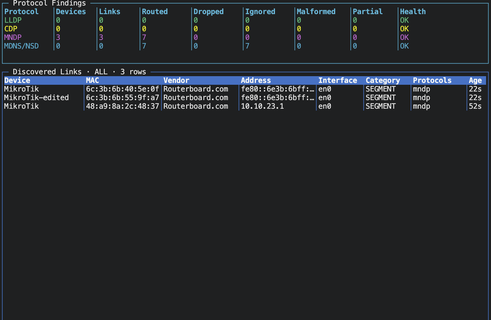

LLDP
IEEE physical adjacency, chassis, port, VLAN, management address, and capability evidence.
Passive network identity · pure Go
A receive-only, zero-Cgo discovery engine that decodes LLDP, CDP, MNDP, and mDNS/DNS-SD, then fuses repeated observations into bounded device and link state.
$ sudo omnidiscover -i en0 -p all PROTOCOL DEVICES LINKS HEALTH LLDP 3 4 OK CDP 1 1 OK MNDP 2 2 OK MDNS 8 9 OK DEVICE MAC MODEL MikroTik 6c:3b:6b:55:9f:a7 RB952Ui-5ac2nD core-switch 00:1b:54:… C9300-24T living-room — Google Cast receive-only · no probes sent
Protocol-specific evidence remains traceable while direct MAC, address, and interface relationships enrich the same canonical device. Names alone never trigger unsafe merges.
IEEE physical adjacency, chassis, port, VLAN, management address, and capability evidence.
Cisco neighbor identity, platform, software, interfaces, capabilities, and native VLAN.
MikroTik MAC, identity, board model, platform, version, addresses, interface, and uptime.
Response-only service correlation across PTR, SRV, TXT, A, and AAAA records.
Native capture, bounded storage, and defensive decoders keep the receive path predictable under busy or hostile network traffic.
No mDNS questions, MNDP refresh requests, or other discovery traffic is transmitted.
AF_PACKET on Linux, BPF on macOS, and passive UDP listeners on Windows. No libpcap.
Preallocated queues, bounded caches, fixed keys, and single-owner fusion avoid unbounded growth.
EtherType, LLC/SNAP, and UDP-port dispatch routes directly without trying every decoder.
Every slice is bounds checked; malformed frames return structured status instead of panicking.
Refreshes extend TTL silently, conflicts retain provenance, and one device can own multiple links.
The bundled termui command refreshes findings by protocol and categorizes physical adjacency and segment presence with MAC, vendor, model, platform, and uptime.

# UDP discovery without raw capture privileges
go run ./cmd/omnidiscover -protocols mdns,mndp
# All protocols on Linux
sudo go run ./cmd/omnidiscover \
-interfaces eth0 \
-protocols all
# Library
go get github.com/kmoz000/omnidiscover/pkg/omnidiscover
engine, err := omnidiscover.New(omnidiscover.Config{
Interfaces: []string{"eth0"},
Protocols: omnidiscover.ProtocolsAll,
})Reference results on Apple M1, Darwin/arm64, CGO_ENABLED=0. All listed hot paths complete with zero heap allocations.
| Operation | Time | Heap | Allocations |
|---|---|---|---|
| Decode LLDP | 65.55 ns/op | 0 B/op | 0 allocs/op |
| Decode CDP | 55.16 ns/op | 0 B/op | 0 allocs/op |
| Decode MNDP | 22.50 ns/op | 0 B/op | 0 allocs/op |
| Decode mDNS | 222.8 ns/op | 0 B/op | 0 allocs/op |
| Route Ethernet frame | 87.87 ns/op | 0 B/op | 0 allocs/op |
| IEEE vendor lookup | 10.10 ns/op | 0 B/op | 0 allocs/op |
Local reference copies from authoritative publishers support implementation review and reproducible protocol work.
{kind=link}